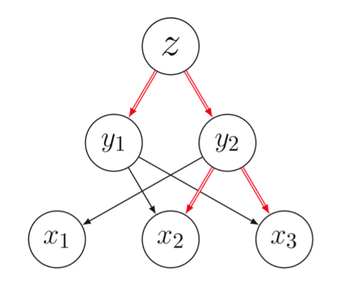
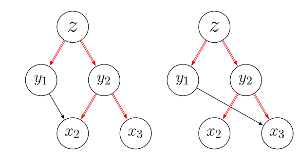
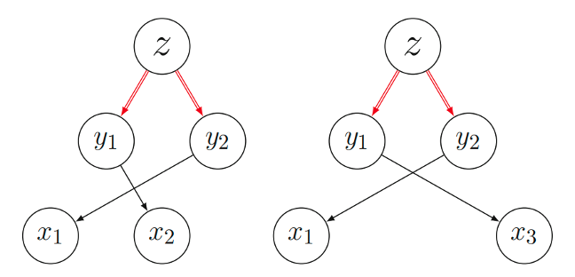

什么是需要探究真正导致结果的解的性质(实验结果与本质)
实验结果： 偶数解是没有用的，可以去除的
本质： 布尔域上偶数个单项式发生相消导致偶数解没有用
真正可以实现剪枝的原因
这是一个“经典困难”问题，尝试解释如下：
为使叙述更加直观，一个简单的流密码定义如下：
根据图模型的构建原理，得到的模型$G=(V,E)$如下：
有向图为：

在模型的逐层展开$(z \to y \to x)$中，存在$y_1 \to x_2 , y_2 \to \{x_2,x_3\}$ 和 $y_1 \to x_3 , y_2 \to \{x_2,x_3\}$这两种情况，他们在多项式中的结果都是一样的： $ y_1y_2 \to x_2x_3$ ，由于是布尔域上的函数，消去后并不会存在于超多项式中。
易知完整的4条路径如下：


- 状态变量”相同输入-相同输出“，是可以去除的偶数单项式路径
理论分析
实际分析
实现对比
- 图模型的Gurobi变量是有向图的边（传播关系），而边是可以较快判断哪些点是活跃的，该方法更容易判断这种偶数情况
- 可分性模型的Gurobi变量是状态变量（约等于图模型中的点），点本身就是变量，点是否活跃难以快速判断，想要实现判断需要增加大量约束。
具体实现：
- 一个前提：同一个寄存器若存在3个（4个）连续的活跃点，则一定存在指定情况的Pattern。
- 判断条件：3个（4个）连续的活跃点 = 某个状态变量S连续3轮（4轮）都存在于单项式路径中
上述内容仅用于非领域人员快速了解，具体实现逻辑及细节不做展示
Welcome to MinZhang’s space! If you have any questions about the following issues, you can contact me on GitHub or email- zhangmin2022@iie.ac.cn.